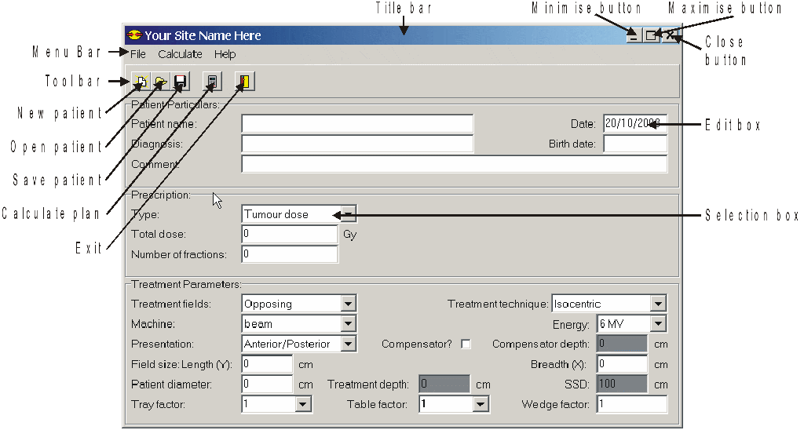

Now that you have gained some experience in using the Opposing Fields program, we will look at each field in detail and discuss its meaning and range. Before describing each field, let’s have a look at the different sections of the screen, an example of which is shown in Figure 5.
Figure 5: Sections of the Opposing Fields window.